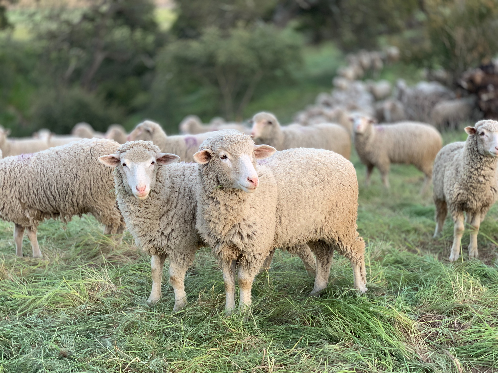

AGING
Causes
Solutions
Solutions
1.gene manipulation

Gene manipulation is also sometimes called the genetic engineering. It is a general term for any method which manipulate with the genetic material. Gene manipulation includes gene splicing, use of recombinant DNA, forming of the monoclonal antibodies or PCR (polymerase chain reaction).
2.body component reconstitution

Processing bodies (P-bodies) are cytoplasmic ribonucleoprotein (RNP) granules primarily composed of translationally repressed mRNAs and proteins related to mRNA decay, suggesting roles in post-transcriptional regulation. P-bodies are conserved in eukaryotic cells and exhibit properties of liquid droplets. However, the function of P-bodies in translational repression and/or mRNA decay remains contentious. Here we review recent advances in our understanding of the molecular composition of P-bodies, the interactions and processes that regulate P-body liquid–liquid phase separation (LLPS), and the cellular localization of mRNA decay machinery, in the context of how these discoveries refine models of P-body function.
3.making clone and substitution the one before for the new

Gene duplication (or chromosomal duplication or gene amplification) is a major mechanism through which new genetic material is generated during molecular evolution. It can be defined as any duplication of a region of DNA that contains a gene. Gene duplications can arise as products of several types of errors in DNA replication and repair machinery as well as through fortuitous capture by selfish genetic elements. Common sources of gene duplications include ectopic recombination, retrotransposition event, aneuploidy, polyploidy, and replication slippage.